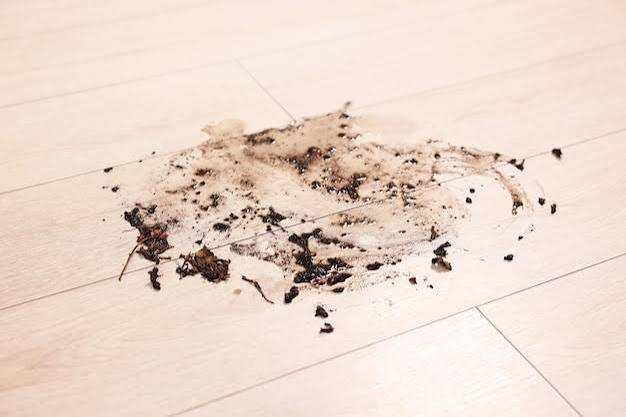

The Kitchen
Jerry's food and water are spilled onto the floor, and the back door is wide open, almost like someone broke in. A note from the neighbor on the counter says, "Here are the spare keys. I'm on vacation." Paw prints cover the floor by the back door and stop there. Jerry might have snuck out.
